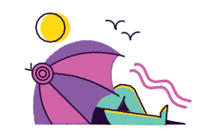
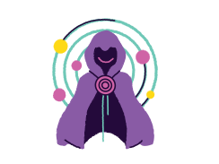
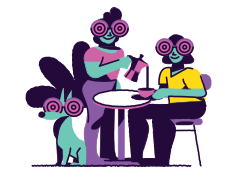
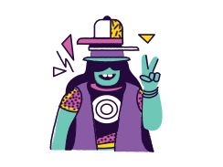
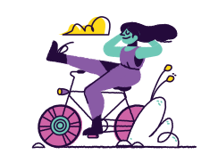

BLOCK TRACKERS
Tor Browser isolates each website you visit so third-party trackers
and ads can't follow you. Any cookies automatically clear when
you're done browsing. So will your browsing history.
Tor Browser isolates each website you visit so third-party trackers
and ads can't follow you. Any cookies automatically clear when
you're done browsing. So will your browsing history.
DEFEND AGAINST SURVEILLANCE
Tor Browser prevents someone watching your connection from
knowing what websites you visit. All anyone monitoring your
browsing habits can see is that you're using Tor.

Tor Browser prevents someone watching your connection from
knowing what websites you visit. All anyone monitoring your
browsing habits can see is that you're using Tor.

RESIST FINGERPRINTING
Tor Browser aims to make all users look the same, making it
difficult for you to be fingerprinted based on your browser and
device information.
Tor Browser aims to make all users look the same, making it
difficult for you to be fingerprinted based on your browser and
device information.
MULTI-LAYERED ENCRYPTION
Your traffic is relayed and encrypted three times as it passes over
the Tor network. The network is comprised of thousands of
volunteer-run servers known as Tor relays.

Your traffic is relayed and encrypted three times as it passes over
the Tor network. The network is comprised of thousands of
volunteer-run servers known as Tor relays.

BROWSE FREELY
With Tor Browser, you are free to access sites your home network
may have blocked.
With Tor Browser, you are free to access sites your home network
may have blocked.
ABOUT US
We believe everyone should be ableto explore the internet with privacy.
We are the Tor Project, a 501(c)(3) US
nonprofit. We advance human rights
and defend your privacy online
through free software and open
networks. Meet our team.